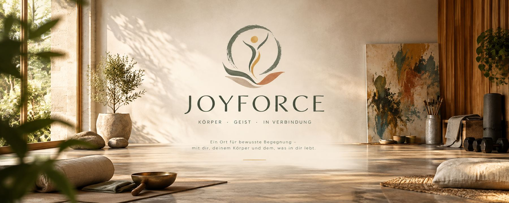

Nicht bewerten
Was hier entsteht — ein Bild, eine Bewegung, ein Ergebnis im Kraftraum — wird nicht eingeordnet, gelobt oder kritisiert.

Joyforce — ein entstehendes Konzept
Joyforce ist ein Ort, um Körper und Geist wieder zusammenzubringen — durch freien Ausdruck im Mal- und Töpferraum, Tanz und Bewegung, Yoga, Gesprächs- und Körperarbeit sowie Krafttraining. Kein Kurs, dem man folgen muss. Kein Ergebnis, das bewertet wird. Nur Raum.
Joyforce gibt es noch nicht als Gebäude — diese Seite zeigt eine Vision, die gerade Form annimmt, und lädt ein, sie mitzudenken.
Wie das gemeint istJoyforce definiert keinen neuen Beruf, sondern einen Ort mit einer bestimmten Haltung. Leitgedanke ist Salutogenese: nicht heilen oder reparieren, sondern begleiten — auf Augenhöhe, Mensch zu Mensch, nicht rollenbasiert. Der Mensch bleibt Gestalter seines eigenen Prozesses, kein passiver Empfänger einer Behandlung. Was dabei entsteht, ist nicht das Wichtigste — wichtiger ist, wie damit umgegangen wird. Vier Dinge gelten überall im Haus:
Was hier entsteht — ein Bild, eine Bewegung, ein Ergebnis im Kraftraum — wird nicht eingeordnet, gelobt oder kritisiert.
Niemand muss mitmachen, mitreden oder sich zeigen. Die einzige feste Regel: Es gibt keine Pflicht.
Körper und Geist sind nicht getrennt. Kraft, Ruhe und Ausdruck gehören zusammen — nicht in getrennte Kategorien wie „Therapie“ und „Sport“.
Was im Raum passiert, bleibt im Raum. Keine Fotos ohne Zustimmung, kein Vergleich zwischen Teilnehmenden.
„Raum halten statt lenken. Bezeugen statt interpretieren. Ermöglichen statt eingreifen.“
Anders als ein Kursplan hat Joyforce keinen Ablauf, dem man folgen muss. Jeder Baustein steht für sich und lässt sich frei kombinieren — an einem Tag nur der Mal- und Töpferraum, an einem anderen alles nacheinander, an einem dritten nur der Ruheraum.
Ankommen. Der Übergang zwischen draußen und drinnen — ein kleines Ritual statt Empfangstresen mit Blickkontakt-Zwang.
Fensterlos und bewusst abgeschirmt von Außenreizen. Fester Ort, feste Zeit, dieselbe Gruppe — diese Struktur schafft die innere Freiheit für Entwicklung. Keine Technik, kein Kommentar, keine Interpretation: Die Begleitung hält nur den Raum.
Ein großzügiger Saal ohne Möbel oder Material. Hier darf sich der Körper frei ausdrücken — ohne Choreografie, ohne Bewertung, ohne Interpretation.
Atem und Wahrnehmung statt Form. Kein Spiegel, keine Korrektur von außen.
Selbstwirksamkeit statt Optik — keine Bestenlisten, keine sichtbaren Zahlen. Hier darf die Begleitung bewusst aktiver sein: zeigen, anleiten, auch fordern. Der Mensch bleibt dabei Gestalter seines Prozesses — „Ich begleite dich dabei, etwas selbst zu tun.“
Ein gemeinsamer Raum für körperliche und verbale Begegnung — kein separater Physio- oder Massagebereich. Manualtherapie ist ein mögliches Werkzeug, wenn der Mensch es für seinen Prozess möchte: kein Selbstzweck, keine Pflicht.
Integration. Kein Programm, nur Zeit, das Erlebte nachwirken zu lassen.
Für Menschen, die — aus welchem Grund auch immer — wieder Kontakt zu ihrem Körper und ihren Gefühlen aufnehmen möchten. Manche kommen neugierig, manche erschöpft, manche einfach, weil sie sich lange nicht bewegt oder ausgedrückt haben. Ausschlaggebend ist dabei nicht eine Diagnose, sondern eine Haltung: der Wunsch, aktiv Verantwortung für den eigenen Prozess zu übernehmen — statt passiv behandelt zu werden.
Für Menschen in laufender Therapie kann Joyforce eine Ergänzung sein. Es ersetzt ausdrücklich keine Behandlung und ist kein Ersatz für medizinische oder psychotherapeutische Versorgung.
Drei Arten, an Joyforce teilzuhaben — je nachdem, was gerade passt.
Der Kraftraum steht offen — kommen, bleiben, gehen, ganz ohne Anmeldung an feste Zeiten.
Mal- und Töpferraum, Tanz- und Bewegungsraum sowie Yoga finden in festen, wiederkehrenden Gruppen statt — gleicher Ort, gleiche Zeit, gleiche Menschen.
Der Gesprächs- und Manualtherapieraum wird einzeln vereinbart — Zeit für eine Person, mit oder ohne Manualtherapie.
Ein Physiotherapeut für die körperliche Seite, ein spirituell-mentaler Coach für die seelische Seite — und Laura selbst als Bindeglied mit dem ganzheitlichen Blick: eine körper- und traumaorientierte Begleiterin, die Bewegungs- und Körperwissen mit einem Verständnis für Psyche und Nervensystem verbindet, orientiert an Ansätzen wie Somatic Experiencing, NARM und Bodynamic. Denkbar ist eine größere Gemeinschaftspraxis mit weiteren selbstständigen Kolleg:innen — ausgewählt nach gemeinsamer Haltung, nicht nach fehlender Berufsgruppe. Wenn dich das anspricht, melde dich gern.
Joyforce steht noch am Anfang. Wenn dich die Idee anspricht — als zukünftige:r Besucher:in, als Teil des Teams oder als Unterstützer:in — freuen wir uns über eine Nachricht. Kein Formular, kein Funnel: einfach eine E-Mail.
info@joyforce.de